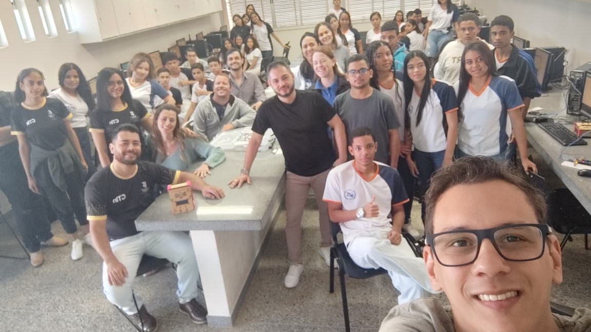
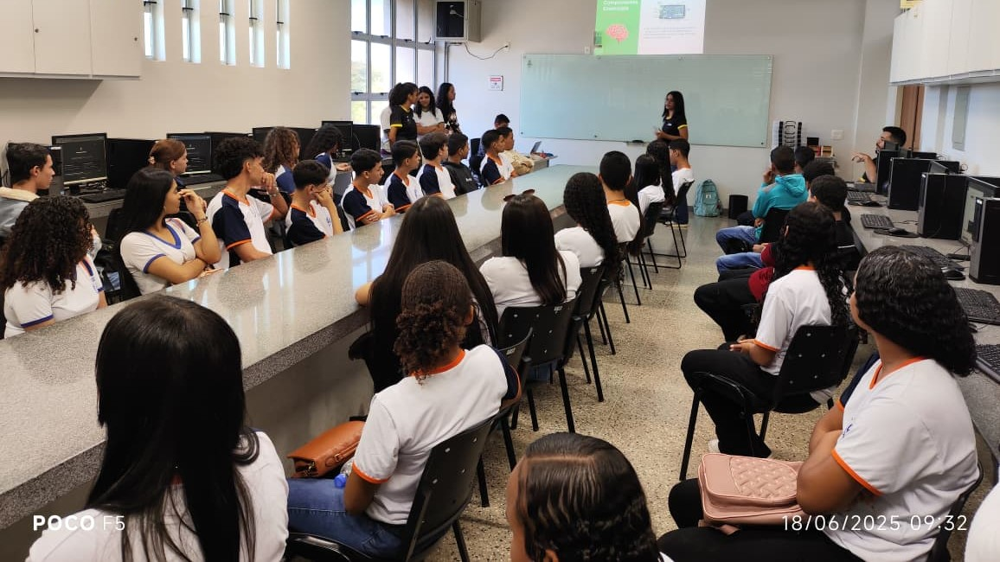
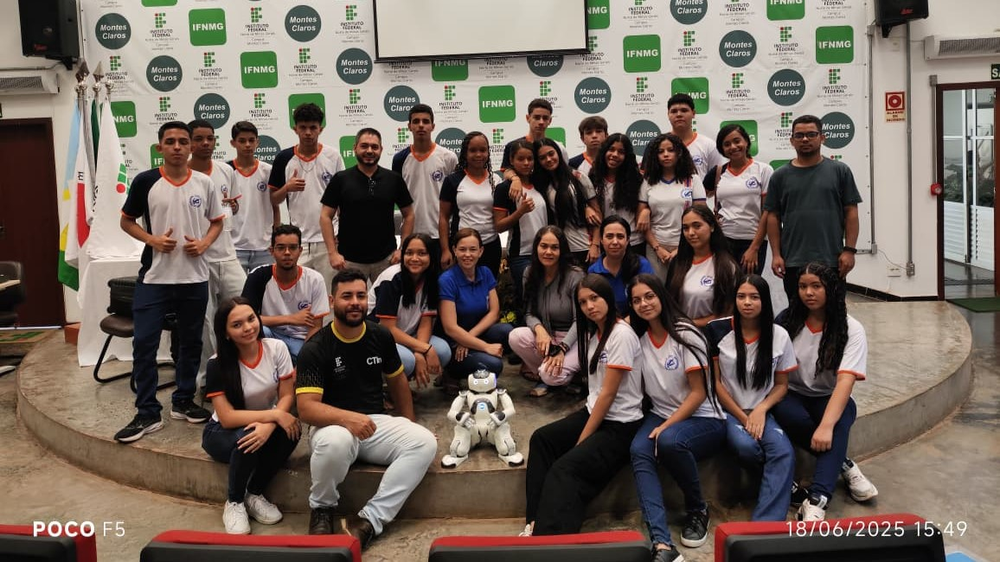
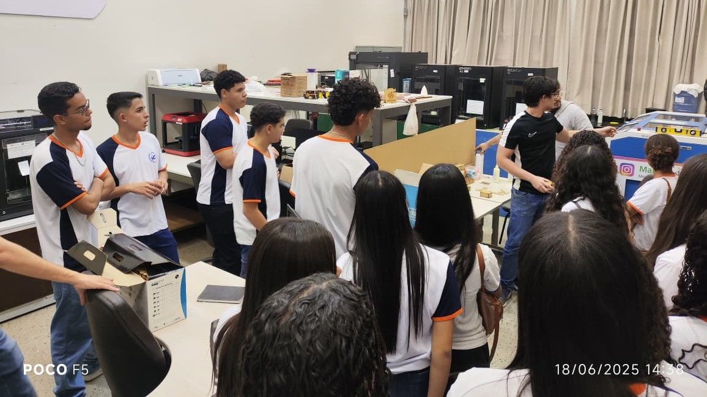
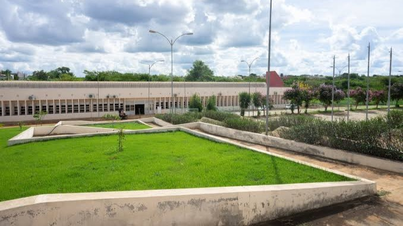

Sala de Informática
UM ESPAÇO DE APRENDIZADO, INOVAÇÃO E DESCOBERTAS TECNOLÓGICAS.
Escola Estadual Maria Barbosa Leite
3º ANO • CURSO TÉCNICO EM INFORMÁTICA
COORDENAÇÃO: PROFESSOR KLEBER MORAES.
Um momento de aprendizado, diversão e trabalho em equipe que marcou a
trajetória dos alunos da Escola Estadual Maria Barbosa Leite.
IFMG
A visita ao Instituto Federal de Minas Gerais (IFMG), em Montes Claros, teve como principal objetivo conhecer as áreas de informática e tecnologia oferecidas pela instituição. Fomos em busca de ampliar nossos conhecimentos, explorar laboratórios, equipamentos e projetos tecnológicos, além de conhecer as possibilidades de formação e atuação profissional na área. A intenção foi aproximar os alunos da realidade do mercado tecnológico, despertando o interesse pela inovação, pelo aprendizado e pelo futuro profissional.
Espaços equipados com computadores utilizados para aulas práticas e atividades tecnológicas.
Formação profissional e acadêmica voltada para diferentes áreas da tecnologia..
Utilização de tecnologias para construir máquinas e equipamentos que realizam tarefas automaticamente.
Conhecimento de ferramentas, máquinas e dispositivos utilizados no desenvolvimento de atividades tecnológicas.
Confira os registros dessa visita especial ao IFMG de Montes Claros! Cada fotografia representa momentos de aprendizado, descobertas e novas experiências, aproximando nossos alunos do universo da informática, da tecnologia e das oportunidades para o futuro.

UM ESPAÇO DE APRENDIZADO, INOVAÇÃO E DESCOBERTAS TECNOLÓGICAS.

CONHECENDO AS OPORTUNIDADES, OS CONHECIMENTOS E AS POSSIBILIDADES NA ÁREA DA TECNOLOGIA.

ALUNOS REUNIDOS EM UMA EXPERIÊNCIA DE APRENDIZADO, CONHECIMENTO E DESCOBERTAS.

EXPLORANDO A TECNOLOGIA QUE TRANSFORMA MODELOS DIGITAIS EM OBJETOS REAIS.

INSTITUTO FEDERAL DE MINAS GERAIS. (IFMG)